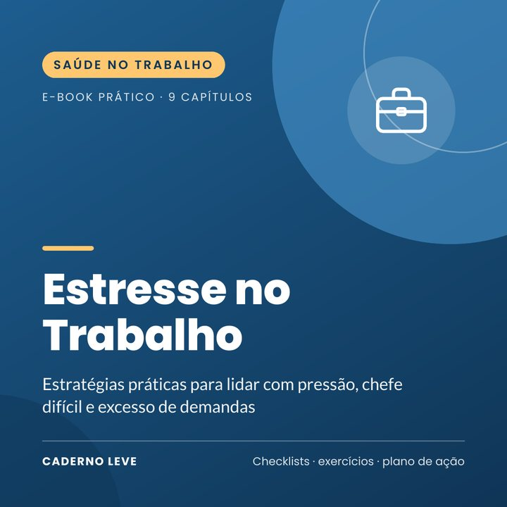

Estresse no Trabalho: Kit de Sobrevivência
Estratégias práticas para lidar com pressão, chefe difícil e excesso de demandas: priorização, roteiros de conversa, técnicas de calma e plano de 4 semanas.
Caixa de entrada lotada, chefe pedindo tudo para ontem e a cabeça latejando no fim do dia? Este kit ajuda você a atravessar a semana com mais calma.
O Estresse no Trabalho: Kit de Sobrevivência é um e-book prático, em linguagem simples, com ferramentas para lidar com a pressão do dia a dia profissional.
Você entende o que o estresse faz com o corpo, mapeia seus gatilhos, aprende a priorizar o excesso de demandas, a lidar com chefes, colegas e clientes difíceis, a se acalmar em 3 minutos no meio do expediente, a controlar mensagens e reuniões e a recuperar a energia fora do trabalho.
O que você vai conquistar
- Mapear o que mais causa estresse no seu trabalho
- Priorizar tarefas com a matriz urgente x importante
- Lidar com diferentes perfis de chefe
- Conversar com colegas e clientes difíceis com o roteiro DESC
- Usar técnicas de calma de 3 minutos
- Proteger tempo de foco e recuperar a energia depois do expediente
O que tem dentro
- Capítulo 1O que o estresse faz com você
- Capítulo 2Mapeando seus gatilhos
- Capítulo 3Excesso de demandas: o que fazer primeiro
- Capítulo 4Lidando com um chefe difícil
- Capítulo 5Colegas e clientes difíceis
- Capítulo 6Calma em 3 minutos no meio do expediente
- Capítulo 7Mensagens, reuniões e interrupções
- Capítulo 8Fora do trabalho: recuperar a energia
- Capítulo 9Quando o estresse vira algo maior
- ExtraResumo e plano de ação para colocar em prática
- ExtraFolha de trabalho e checklist para imprimir
Para quem é
- Quem vive sob pressão constante no trabalho
- Quem tem um chefe ou ambiente difícil
- Quem sente que não dá conta das demandas
Para quem não é
- Não substitui acompanhamento psicológico ou médico
- Não é orientação jurídica sobre assédio ou direitos trabalhistas
Bônus: Folha de trabalho — planejamento semanal de prioridades, diário de gatilhos e checklist diário, além de um plano de 4 semanas.
Aviso importante
Este e-book tem caráter educativo e de autocuidado. Ele não faz diagnóstico, não é tratamento e não substitui psicoterapia nem acompanhamento médico. Se o sofrimento estiver intenso, durando muito tempo ou atrapalhando sua vida, procure um(a) psicólogo(a), um médico ou a Unidade Básica de Saúde (UBS) mais próxima.
Se você precisar conversar agora, o CVV atende de graça, 24h, no 188 ou em cvv.org.br. Em emergência, ligue SAMU 192.